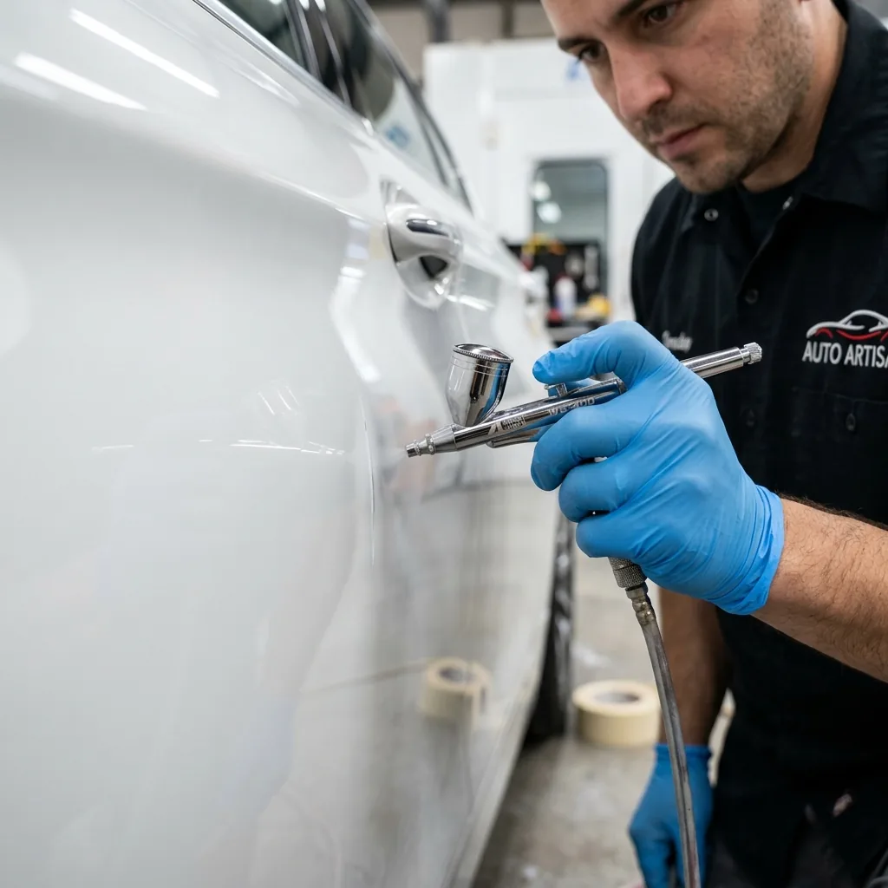

Orijinalliği Bozmadan Onarım
Otopark manevralari veya ufak tefek sürtmeler sonucu araç kaportasında oluşan lokal hasarlar, her araç sahibinin canini sikar. Birçok servis bu tür ufak hasarlarda dahi çamurlugun veya kapinin tamamen boyanmasini önerir. NeTT olarak biz, aracınızın orijinalliğini ve mikron değerlerini korumak için Lokal Boya (Yama Boyasi) teknigini kusursuz uyguluyoruz.
Lokal boya işleminde en kritik nokta, yeni atilan boya ile mevcut boya arasindaki "renk farkinin" giderilmesidir. Spektrofotometre cihazimizla aracinizin günesten solmus mevcut tonunu birebir ölçüyor, boyayi bu tona göre hazirliyoruz. Özel vernik eritici kimyasallar ve geçiş teknikleriyle onarım bölgesi dışarıdan kesinlikle anlaşılamayacak sekilde orijinal boyayla kaynastirilir.

Lokal Boyanin Avantajlari
- Değer Koruma: Parçanin tamami boyanmadigi için ekspertiz raporlarinda aracinizin ikinci el degeri düsmez.
- Ekonomik Çözüm: Komple parça boyamaya göre çok daha uygun maliyetlidir.
- Hızlı Teslimat: Islemin büyüklügüne göre genellikle ayni gün veya ertesi gün teslimat garantisi.
- Görünmez Geçiş: Yama izi birakmayan profesyonel renk geçisi (blending) teknigi.
Hangi Hasarlara Uygulanabilir?
Tampon köse sürtmeleri, çamurluk ağzı çizikleri, ayna kapagi hasarlari ve kapi alti vuruklari lokal boya için en ideal bölgelerdir. Tavan ve kaput ortasi gibi genis ve yatay panellerde, geçis izi kalma riski yüksek oldugu için ekspertiz sonucuna göre komple boya önerilebilir.
.webp)
.webp)
Antalya'da Lokal Boya Süreci Nasıl İşler?
Antalya'da lokal boya, doğru teknik ve ekipmanla uygulandığında, komple boyadan farkı olmayan kusursuz sonuçlar verir. NeTT'te lokal boya süreci şu adımlardan oluşur:
- 1. Hasar Değerlendirmesi: Çizik veya sürtmenin derinliği, boya katmanına ulaşıp ulaşmadığı kontrol edilir.
- 2. Renk Ölçümü: Dijital spektrofotometre ile aracın mevcut rengi ve güneşten solma faktörü ölçülür.
- 3. Yüzey Hazırlığı: Hasarlı bölge özel olarak zımparalanır ve boyaya hazır hale getirilir.
- 4. Renk Karışımı: Ölçülen tona göre boya karıştırılır. Antalya'nın güneşi nedeniyle aracın rengi biraz solmuş olabilir, buna göre ayarlama yapılır.
- 5. Maskeleme: Boyanacak alanın çevresi özenle maskelenir, komşu paneller koruma altına alınır.
- 6. Boya Uygulaması: Tabancayla ince katlar halinde boya uygulanır. Her kat kısa sürede kurur.
- 7. Geçiş (Blending): En kritik aşama - boya, komşu bölgelere yumuşak geçişle uygulanır.
- 8. Vernik ve Kürlenme: Koruyucu vernik uygulanır ve kısa sürede kürlenir.
Antalya'da Lokal Boya Fiyatları 2026
Lokal boya, komple boyaya göre çok daha ekonomik bir çözümdür. 2026 fiyatları:
Lokal Boya Fiyat Aralıkları
- Tek Kapı Lokal Boya: 3.000 - 5.000 TL
- Çamurluk Lokal Boya: 3.500 - 6.000 TL
- Tampon Lokal Boya: 2.500 - 5.000 TL
- Ayna / Kapak: 1.500 - 3.000 TL
- Çift Kapı (aynı taraf): 5.000 - 9.000 TL
*Fiyatlar hasar durumuna göre değişir. Kesin fiyat için WhatsApp'tan fotoğraf gönderin.
Lokal Boya mı, Komple Boya mı?
Antalya'da araç sahiplerinin en çok sorduğu sorulardan biri budur. İşte karşılaştırma:
Lokal Boya Tercih Edilmeli
- Tek panelde küçük hasar
- Bütçe kısıtlıysa
- Hızlı sonuç gerekiyorsa
- Aracın değerini korumak isteniyorsa
- Sadece estetik düzeltme amaçlıysa
Komple Boya Tercih Edilmeli
- Birden fazla panel hasarlıysa
- Aracın tamamında güneş yanığı varsa
- Renk değişikliği yapılacaksa
- Uzun vadeli kalite isteniyorsa
- Restorasyon projesiyse
Lokal Boya Hakkında Sıkça Sorulan Sorular
Antalya'da lokal boya ne kadar sürer?
Küçük hasarlar (tek kapı veya çamurluk) genellikle 4-8 saat içinde tamamlanır. Aynı gün teslimat mümkündür. Daha büyük lokal işlemler (iki kapı, tampon dahil) 1-2 gün sürebilir. Antalya'da lokal boya için NeTT'i tercih eden müşteriler genellikle "hızlı" olduğumuzu belirtir.
Lokal boyada yama izi kalır mı?
Profesyonel uygulamada yama izi kalmaz. NeTT'te kullandığımız özel geçiş (blending) tekniği ve yüksek kaliteli vernikler sayesinde, boyanan bölge ile orijinal boya arasındaki sınır tamamen kaybolur. Ancak bu, doğru teknik ve kaliteli malzeme kullanımına bağlıdır. Piyasadaki bazı ucuz uygulamalar iz bırakabilir.
Lokal boya aracın değerini düşürür mü?
Komple boyanın aksine, lokal boya araç değerini minimum düzeyde etkiler. Ekspertiz raporlarında, lokal boya "periyodik bakım" kapsamında değerlendirilebilir. Özellikle tek kapı veya çamurluk gibi küçük onarımlarda, aracın ikinci el değeri üzerinde ciddi bir kayıp oluşmaz. Profesyonel lokal boya, aracın "boyali" statüsüne tam bir onarım olarak bakılmasını sağlar.
Antalya'nın iklimi lokal boyayı etkiler mi?
Antalya'nın yoğun güneşi ve yüksek UV oranı, boyanın solmasına neden olabilir. Ancak bu, lokal boyanın kendisini değil, boyama sonrası bakımı etkiler. NeTT'te UV korumalı vernikler kullanıyoruz, bu lokal boyanın ömrünü uzatır. Ayrıca düzenli bakım ve koruma ile lokal boyanınuzun yıllar görünümünü koruyabilir.
FOTOĞRAF GÖNDERİN
Çizik veya sürtme olan bölgenin fotoğrafını çekip bize WhatsApp üzerinden iletin, "lokal" mi yoksa "komple" mi onarım gerektigini hemen söyleyelim.